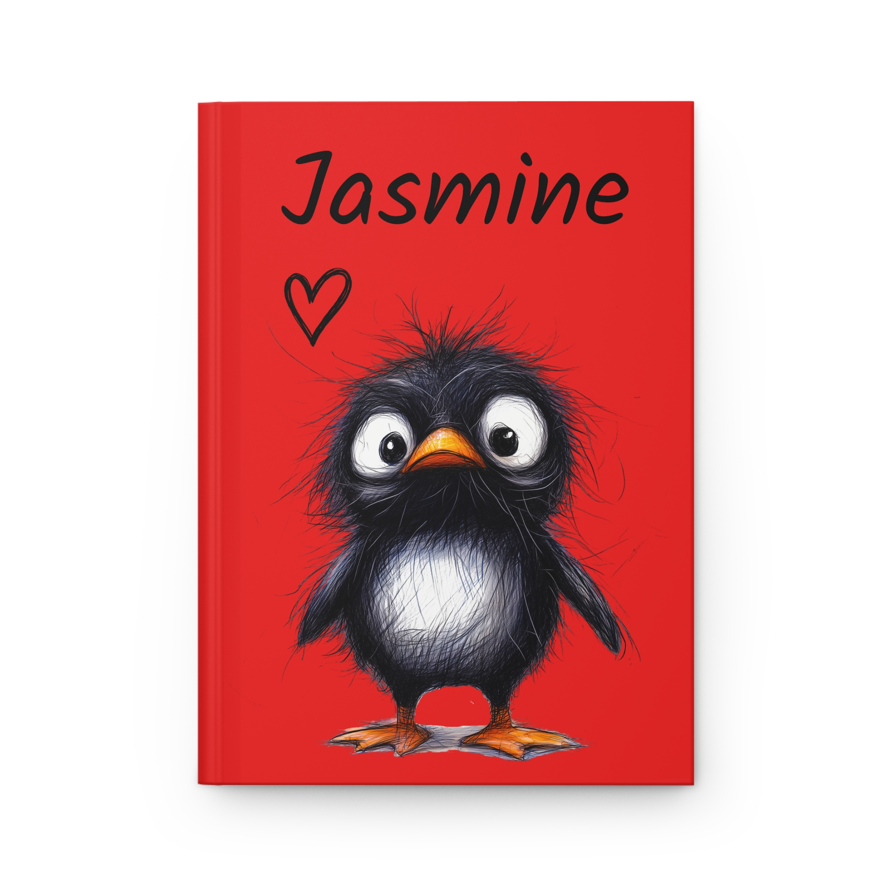

Personalized Red Blossom Hardcover Journal
A personalized 150-page lined hardcover journal with a full wraparound red blossom design. Add any name to the front cover.
View journal →
Browse personalized journals, guided journals, notebooks and sketchbooks from Open Theory Cove.
A personalized 150-page lined hardcover journal with a full wraparound red blossom design. Add any name to the front cover.
View journal →
A playful personalized hardcover journal with 150 lined pages, a bright red penguin design and your chosen name on the front.
View journal →
A lined journal for reflection, goals, ideas and everyday writing.
View journal →
A repeating guided practice for intention, writing and reflection.
View journal →